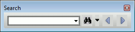
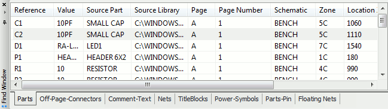
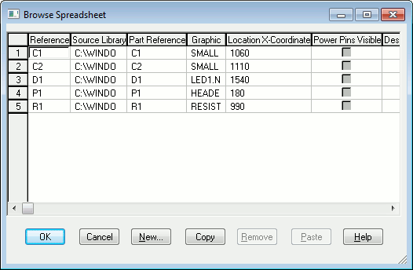
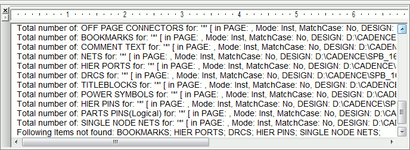

In Capture, you can search for specific comment text on a
part, or you can search for a pin by name or by one of its
property values.
Using the Find command and a part property value, you can
locate a part in a schematic folder or on a schematic page.
In the Find toolbar, you enter a property value string and
specify that you want to find a part. Capture searches all
the parts to find those with a property value that matches
the string. You can use question marks (?) or
asterisks (*) as wildcards in the property value
string.
To locate an object in a project
- In the project manager, select the schematic folders or schematic pages you want to search.
-
From the Edit menu, choose the Find command. The Find
toolbar appears.
OR
Press Ctrl+F. -
In the Text to Search text box, enter the property value string for the part you seek. You must use wildcard characters (standard "*" or "?") with a truncated search. For example, to search for resistors, enter "R*".
You can also search for a part by property or use regular expressions in your search string.

Note that with Regular Expressions search feature enabled, Find performs a complete match for a search string containing alpha-numeric characters, underscore (_) or space unlike the standard regular expression search in TCL. For any other characters or patterns in the search string, standard TCL regular expression search behavior is observed.
-
The Search options drop-down list allows you to specify
search criteria.
You can choose a case-sensitive or case-insensitive search.
You can highlight the first object found from the search.
You can choose the type (or types) of objects to search. -
Click the Search button to start the search.
Object that have a property value matching the property value string in step 3 are listed in the Find window. - Double-click on the part in the Find window list to open the schematic page editor with that part displayed and selected.
Searching a Design Hierarchy
The find functionality in Capture allows you to search at different levels of the design hierarchy:
Design Level
- In the Project manager, right-click on a design and choose Find.
-
In the Find text box, type the search string and press
Enter.
The search results displayed in the Find window include all objects found within the entire design.
Folder Level:
- In the Project manager, right-click on a folder and choose Find.
-
In the Find text box, type the search string and press
Enter.
The search results displayed in the Find window include all objects found within the selected folder.
Page Level:
- In the Project manager, right-click on a schematic page and choose Find.
-
In the Find text box, type the search string and press
Enter.
The search results displayed in the Find window include all objects found on the selected page.
OR - Open the schematic page to search and choose Find from the Edit menu.
Multiple Object selection.
-
In the Project manager, use the Ctrl + mouse click
combination to select multiple objects.
You can select multiple folder or multiple pages or any combination of folders and pages. - Right-click on the selection and choose Find.
-
In the Find text box, type the search string and press
Enter.
The search results displayed in the Find window include all objects found within the selected items in the design hierarchy.
Find Toolbar
The find functionality in Capture is available through the Find toolbar.

|
Find text box |
Enter the text to search |
|
Find button |
Run the search command |
|
Find options |
This is a multiple selection pop-up list. It contains the search options that you can set to narrow down or broaden your search. This includes all the searchable object types on your schematic. So if you want to search only for parts, ensure that all the other objects types are unselected. Since it is a multiple select list, you can select multiple object types to search. |
|
Find Next |
Select the next item in the search list. The next find object will be selected on the open page. Or the page containing the next item is opened with the item selected. |
|
Find Previous |
Select the previous item in the search list. The previous find object will be selected on the open page. Or the page containing the previous item is opened with the item selected. |
Find Window Search Results
After the search is complete and if it returned at least
one result the result is displayed in the Find window. This
is a tabbed dockable window.
Each result of the search will display as one line item in
the window. A result line item contains other information
besides the search object reference. This includes the page
and schematic and properties specific to object
types.
If the search returns multiple object types, each type
displays in a different tab in the window.
If you double-click a line item in this window, the
corresponding object is selected on the specific schematic
page.
This window can be set as dockable or floating by
double-clicking on the title bar. In the docked mode, use
the pin icon to alternate the window from pinned to
unpinned. In the unpinned state, the Find window remains
docked but slides in and out of view as you move the cursor
over the window icon.

The pop-up menu on the Find window:
Edit Properties
You can open the Browse Spreadsheet window for a selected part in the Find window.
- Right-click on a search line item.
-
Choose Edit Properties
The Browse Spreadsheet window displays the editable part properties.

Save as HTML
You can also save your search results in HTML format.
- Right-click on a search line item.
-
Choose Save as HTML.
A message displays with the location and name of the exported HTML.
Save as CSV
You can also save your search results of the selected tab on the Find window in CSV format.
- Right-click on a search line item.
-
Choose Save as CSV.
A message displays with the location and name of the exported CSV.
Session Log Search Results
The session log displays a log of the search results. This log contains the hit count of the object types for each object selected in the Search options pop-up list. It also logs the pages that were searched.
